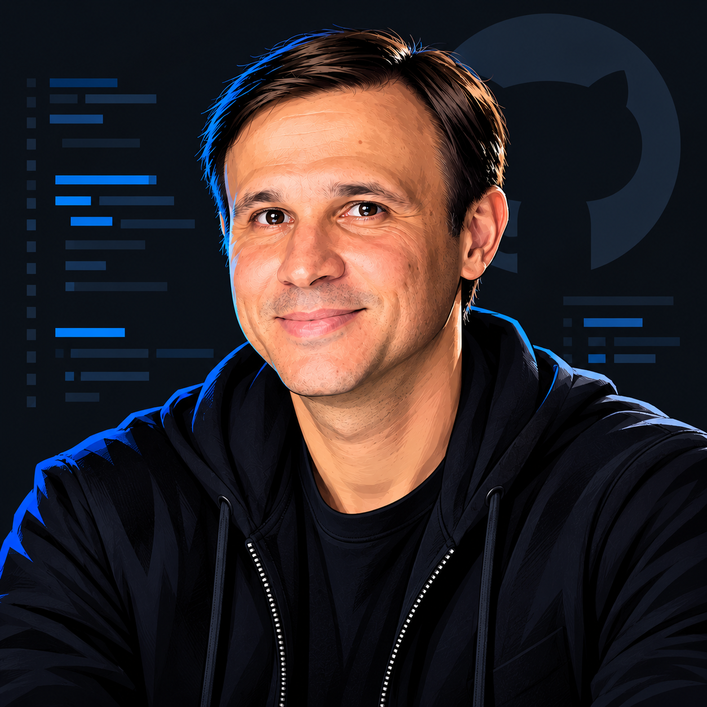
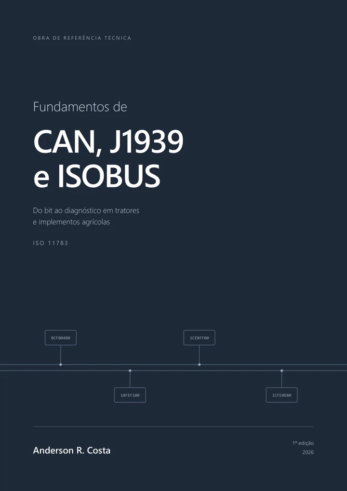

TorqueBus Studio
An open workbench for automotive networks: CAN capture, DBC decoding, diagnostics, simulation, and dashboards.
C++23 · Qt · CAN · J1939
Embedded software developer · Technical author
Embedded software for machines at work in the field.
Firmware, electronics, and communication networks for agricultural and industrial automation. Software developer since 1997, based in Maringá, Paraná, Brazil.
C / C++ · CAN · SAE J1939 · ISOBUS

Engineering in practice
My work connects firmware, electronics, and application software. The focus is on reliable systems and communication between tractors, implements, and industrial equipment.
Differential signals, bus timing, and instrument-based diagnostics.
CAN, SAE J1939, and ISOBUS (ISO 11783), from arbitration to message interpretation.
C/C++ firmware, microcontrollers, real-time software, and equipment integration.
Technical reference · First edition · 2026
From bits to diagnostics in agricultural tractors and implements
A practical guide to the networks that connect tractors and implements: from the CAN physical layer to SAE J1939 and ISOBUS, with exercises and diagnostic case studies.

Selected work
An open workbench for automotive networks: CAN capture, DBC decoding, diagnostics, simulation, and dashboards.
C++23 · Qt · CAN · J1939
An offline Arduino simulator with a visual circuit editor, peripherals, and real-time diagnostics.
TypeScript · Electron · AVR
A Rust compiler project for CA-Clipper and Harbour compatibility, with a C backend, tests, and continuous integration.
Rust · Compilers · C
An interactive MOS 6502 computer with an assembler, live bus views, and a test runner.
MOS 6502 · Assembly · Simulation
Contact